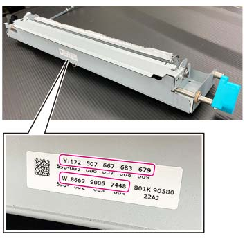

ADJ 76.4.2 Rewriting NVM值 更换时 WR2 组件 
目的
更换时 the WR2 组件, rewrite the NVM值.
步骤
检查 值 在...上 sticker attached on ...的侧面 WR2 组件.
Y:NNN NNN NNN NNN NNN is the 3-数字 NVM值 的 黄色参考板, 和 the values 是 listed 按顺序 of 450 nm, 520 nm, 550 nm, 580 nm, 和 630 nm 从左侧 向右.
W:BBBB BBBB BBBB is the 4-数字 NVM值 的 White 参考 板, 和 the values 是 listed 按顺序 of X-值, Y-值, Z-值 从左侧 向右.

(图 1) ism476504
输入 DC131 NVM 读/写 to rewrite 以下 NVM values 基于 the values 在...上 sticker 在...上 WR2 组件 侧面.
NVM [580-010] 黄色参考板 450 nm Reflection Ratio EX
NVM [580-012] 黄色参考板 520 nm Reflection Ratio EX
NVM [580-014] 黄色参考板 550 nm Reflection Ratio EX
NVM [580-016] 黄色参考板 580 nm Reflection Ratio EX
NVM [580-018] 黄色参考板 630 nm Reflection Ratio EX
NVM [580-004] White 参考 板 X 值 EX
NVM [580-006] White 参考 板 Y 值 EX
NVM [580-008] White 参考 板 Z 值 EX
关闭再打开电源.